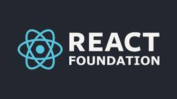
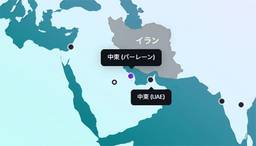
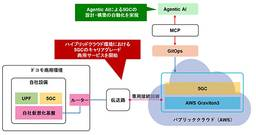
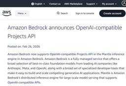
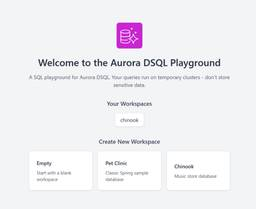

Publickey
https://www.publickey1.jp/
Enterprise ITに軸足を置き、新たにIT業界を変えつつあるクラウドコンピューティングやHTML5など最新の話題を、ブロガー独自の分析を交え、充実した記事で紹介するブログです。毎日更新しています。
フィード
Google Workspaceをコマンドラインで操作する「gws」、Googleがオープンソースで公開。Agent Skillsファイルも提供し、AIエージェントによる適切な操作実現
Publickey
Googleは、GmailやGoogle Drive、Sheets、Docs、Calendarなどを始めとするGoogle Workspace製品に対してコマンドラインからの操作を可能にする「gws」をオープンソースで公開しました。 gws...
3日前

State of JavaScript 2025公開／コーディングエージェントを安全にする分離環境／AI時代の開発プラットフォーム「Entire CLI」公開ほか。2026年2月の人気記事
Publickey
ちょっと汚い話で恐縮ですが、先日、人生で初めて膀胱炎を経験しました。 夜中に何度も尿意を感じるし、ひりひりするのに尿はほとんど出ないという症状。経験したことのない症状に当たると、これはどうなってしまうんだろう？ と不安になりますよね。 翌日...
3日前

The React Foundatoinが正式に創設、中立的なReactの開発へ。Linux Foundation傘下で
Publickey
ReactおよびReact Nativeの開発を中立的な立場で主導する団体「The React Foundation」が、Linux Foundation傘下で正式に創設されました。 The React Foundation has off...
4日前
Google、Chromeのリリースサイクルを2週間に短縮すると発表。Webの進化がさらに高速に
Publickey
Googleは、同社が提供しているWebブラウザ「Chrome」のリリースサイクルを、今年（2026年）9月8日のChrome 153から2週間に短縮することを発表しました。 Chromeは現在4週間ごとに「マイルストーン」と呼ばれる新バー...
4日前
主要なブラウザエンジンにて、Service WorkerでのJavaScriptモジュール機能が利用可能に
Publickey
主要なブラウザエンジンにおいて、JavaScriptをバックグラウンドで動作させる仕組みであるService WorkerでのJavaScriptのモジュール機能が利用可能になりました。 主要なWebブラウザなどで安定して利用できるWeb標...
4日前

AWS、中東でデータセンター施設がドローンの直接攻撃を受けたことを公表。3つのアベイラビリティゾーンのうち2つが著しく損傷
Publickey
Amazon Web Services（AWS）は、米国とイスラエルがイランを軍事攻撃したことに端を発する紛争が続く中東において、データセンター施設がドローンの直接攻撃を受けたことなどにより大きな障害が発生していることをAWS Health...
5日前

NTTドコモ、AWSを用いた5Gコアネットワークの商用運用を開始。AIエージェントを用いた設計、構築の自動化により人為ミスの防止や構築期間の80%短縮を実現
Publickey
NTTドコモとAWSは、NTTドコモがAWSのクラウドサービスと同社のオンプレミス上の仮想化基盤を組み合わせたハイブリッド環境上で5Gコアネットワークの商用サービスを開始したことを発表しました（NTTドコモとNECの発表、AWSの発表）。 ...
5日前
AWSがOpenAIの企業向けAIエージェント基盤「OpenAI Frontier」の独占的な外部クラウドプロバイダーになると発表、AmazonがOpenAIに7兆5000億円を投資
Publickey
Amazon Web Services（AWS）とOpenAIは、企業向けのAIエージェントプラットフォームなどに関する複数年にわたる戦略的パートナーシップを発表しました。 この戦略的パートナーシップでは、AWSとOpenAIがステートフル...
6日前

「Amazon Bedrock」でOpenAI API互換のPorjects APIを提供開始。オープンウェイトな基盤モデルでOpenAI SDKが利用可能に
Publickey
Amazon Web Services（AWS）は、同社のAIプラットフォームであるAmazon Bedrockで提供しているMantle推論エンジンで、OpenAI API互換のProjects APIの提供開始を発表しました。 Amaz...
6日前
「月刊DBマガジン」が復刻、Kindleで第一弾が販売開始
Publickey
翔泳社は「月刊DBマガジン」復刻版第一弾の販売をKindleで開始したと発表しました。 「月刊DBマガジン」は、1999年から2010年にかけてデータベース技術を中心に、当時最新のIT関連情報を紹介していた雑誌です。 発刊元である翔泳社は昨...
6日前

AWS、ログイン不要で「Aurora DSQL」をすぐ試せるプレイグラウンド公開。PostgreSQLとの互換性チェックに
Publickey
Amazon Web Services（AWS）は、同社のデータベースサービスAmazon Aurora DSQLを試せるプレイグラウンドの公開を発表しました。 Amazon Aurora DSQLは、ほぼ無制限にスケールする大規模分散デー...
7日前
Vercel、単一のTypeScriptコードでSlack、Teams、Discordをはじめ主要チャットサービスに対応したチャットボットが作れる「Chat SDK」、オープンソースで公開
Publickey
Vercelは、単一のTypeScriptコードで複数のチャットプラットフォームに対応したチャットボットを構築できるオープンソースの「Chat SDK」をパブリックベータで公開しました。 You can now write chat bot...
7日前

「Java to Kotlinコンバータ for VS Code」、JetBrainsがリリース
Publickey
JetBrainsは、Visual Studio Code（VS Code）の拡張機能としてJavaのコードを自動的にKotlinコードに変換する「Java to Kotlinコンバータ for VS Code」（j2k-vscode）をリ...
11日前
LibreOfficeがWebブラウザから利用できる「LibreOffice Online」開発の再始動を発表
Publickey
無料で利用可能なオフィススイート「LibreOffice」を開発しているThe Document Foundationは、Webブラウザから利用可能な「LibreOffice Online」の開発を再始動すると発表しました。 LibreOf...
11日前
AWS、サブエージェントごとにフロントエンド担当、バックエンド担当などカスタマイズによる高性能化が可能な「Kiro 0.9」リリース
Publickey
Amazon Web Servicesは、同社が提供するAIコードエディタの新バージョン「Kiro 0.9」のリリースを発表しました。 KiroはVisual Studio Code（VS Code）互換のコードエディタに生成AIの機能を統...
12日前